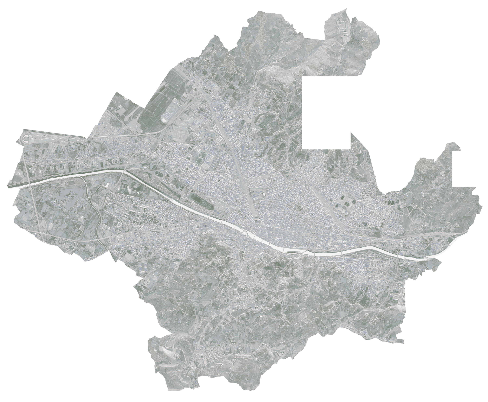
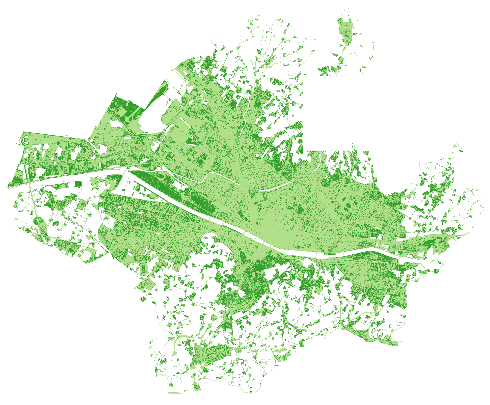
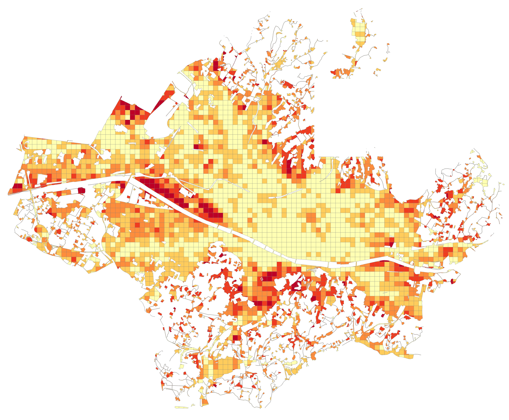
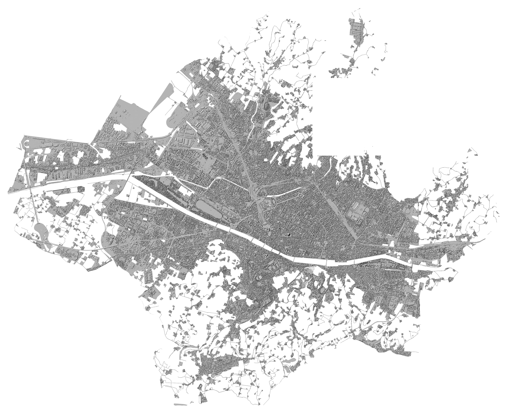
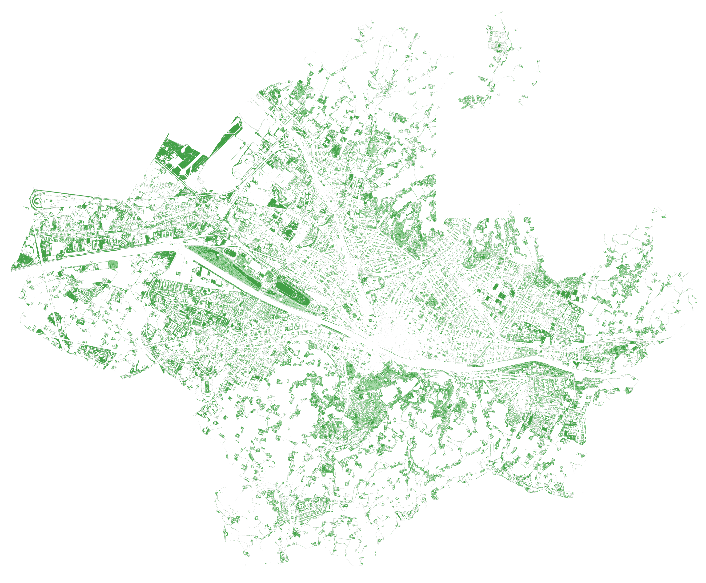
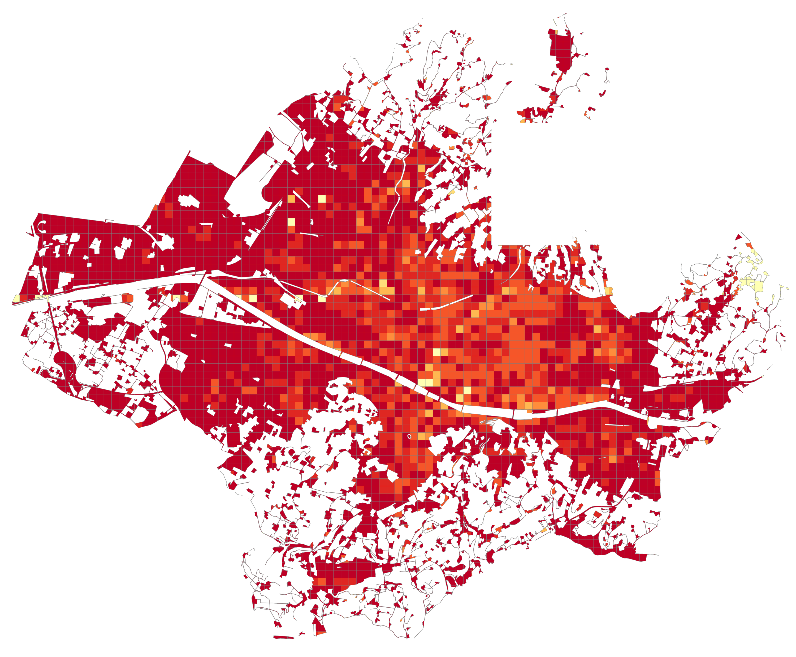
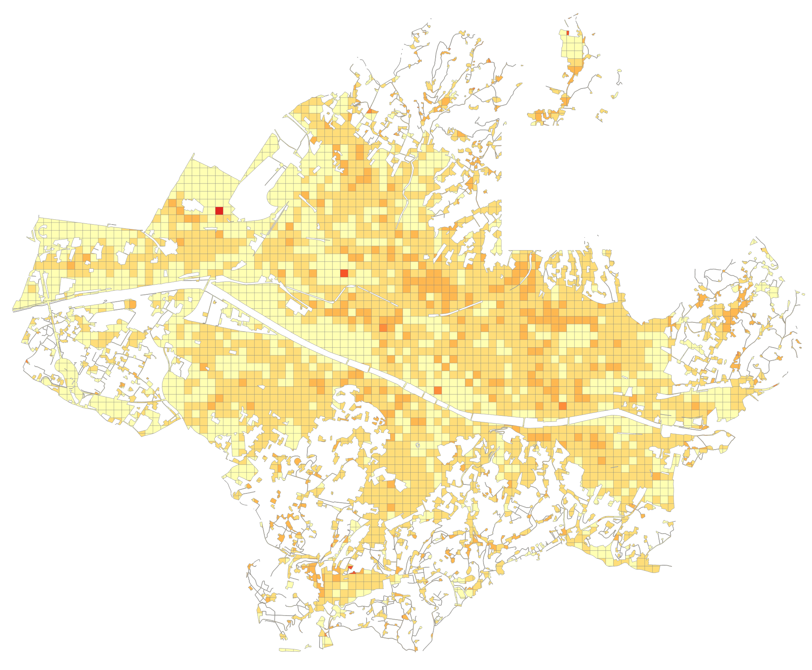
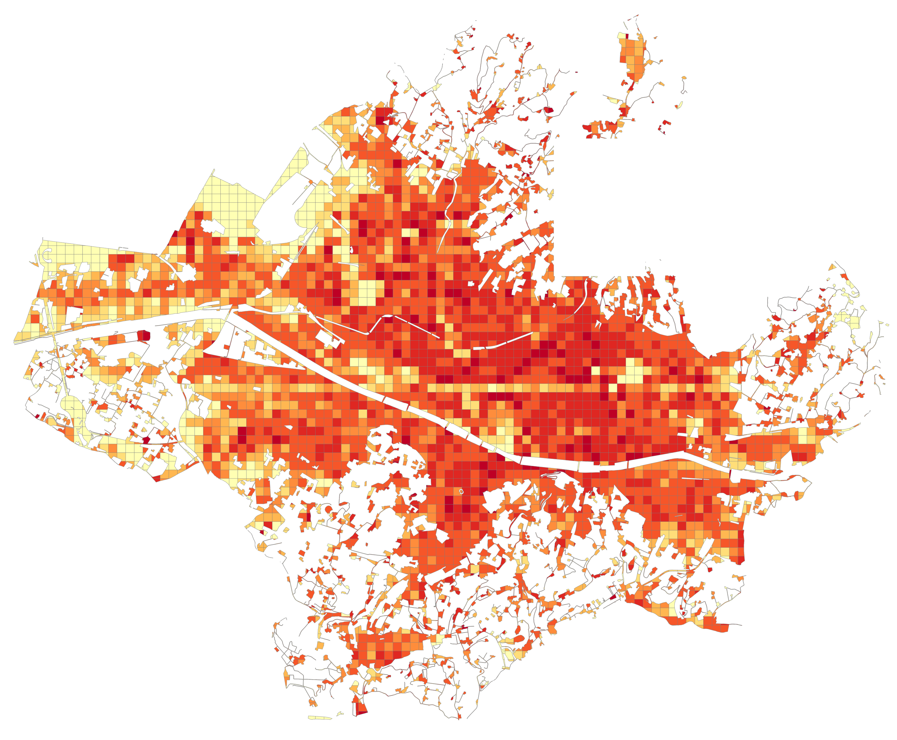
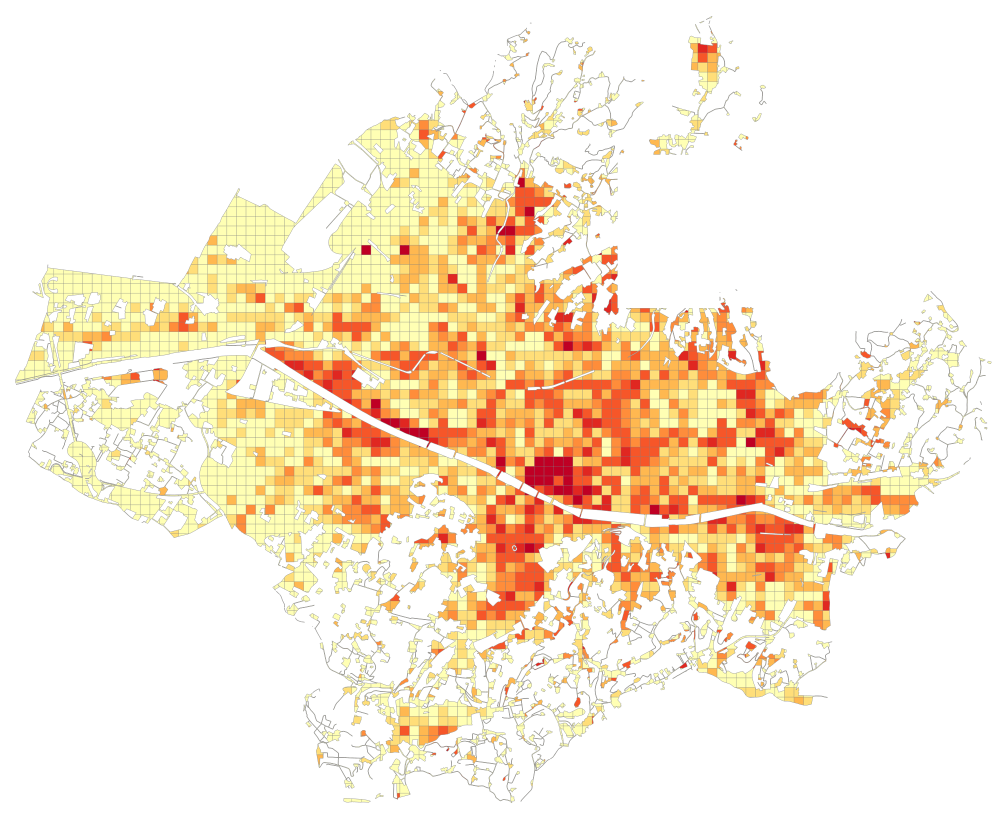

Urban project for a critical area in Odivelas (Lisbon metropolitan area)
This work, starting from a 4-band LiDAR orthophoto (RGB + infrared NIR) and a DTM of the Municipality of Florence freely downloadable from the Geoscope of Tuscany Region website, mapped the urban green areas and categorized them according to vegetation height. After the NDVI parameter calculation, improved with a filtered method that I designed, the DSM normalization was performed subtracting the DSM height to the DTM. The result of the NDVI calculation and of the DSM normalization was therefore joined, obtaining the height value for the green arean, necessary in order to categorize the urban vegetation height.
4 bands Orthopohoto of Florence
Vegetation Index

Improved Urban Vegetation Index
Municipal analysis of Urban Vegetation
DTM
DSM
Urban DSM Normalized
Urban Elements height
Urban Vegetation height
Municipal analysis of Urban Vegetation classification
   